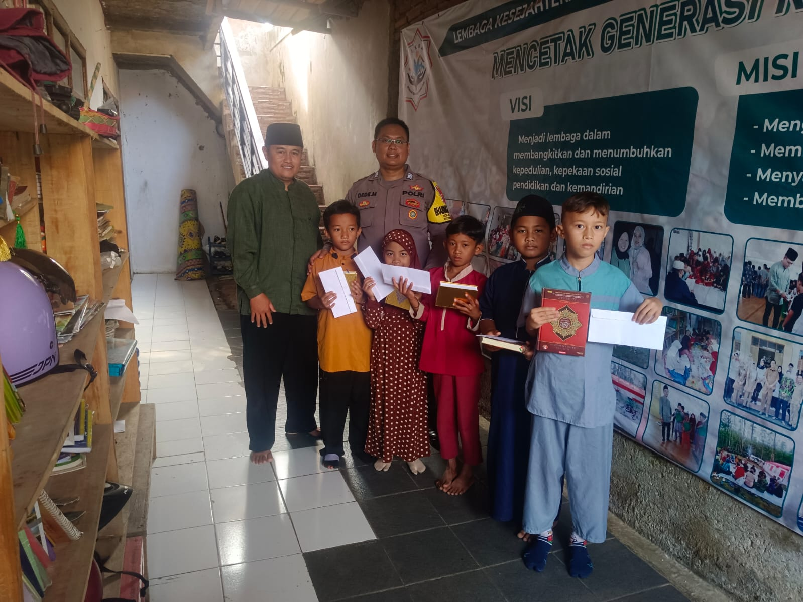

Mengabdi dengan hati
Yayasan Bakti Mulia Bumi Asri Peduli merupakan lembaga sosial yang berdiri dengan semangat kebersamaan untuk memberikan kontribusi nyata bagi masyarakat. Kami berfokus pada program pendidikan, kesehatan, dan kemanusiaan yang bertujuan untuk meningkatkan kualitas hidup serta memberdayakan komunitas secara berkelanjutan.
Dengan prinsip keikhlasan, transparansi, dan tanggung jawab, kami hadir sebagai jembatan antara pihak yang peduli dan mereka yang membutuhkan. Setiap langkah yang kami lakukan merupakan wujud nyata dari komitmen untuk menciptakan masyarakat yang lebih sejahtera, berdaya, dan penuh harapan.
Kami percaya bahwa perubahan besar dimulai dari langkah kecil. Melalui program-program sosial yang terarah, kami terus berupaya menebarkan kebaikan, memperkuat solidaritas, serta menumbuhkan semangat gotong royong demi terwujudnya masa depan yang lebih baik.
Menjadi yayasan yang amanah, profesional, dan berkelanjutan dalam mewujudkan masyarakat yang berdaya, sejahtera, serta penuh kepedulian sosial.